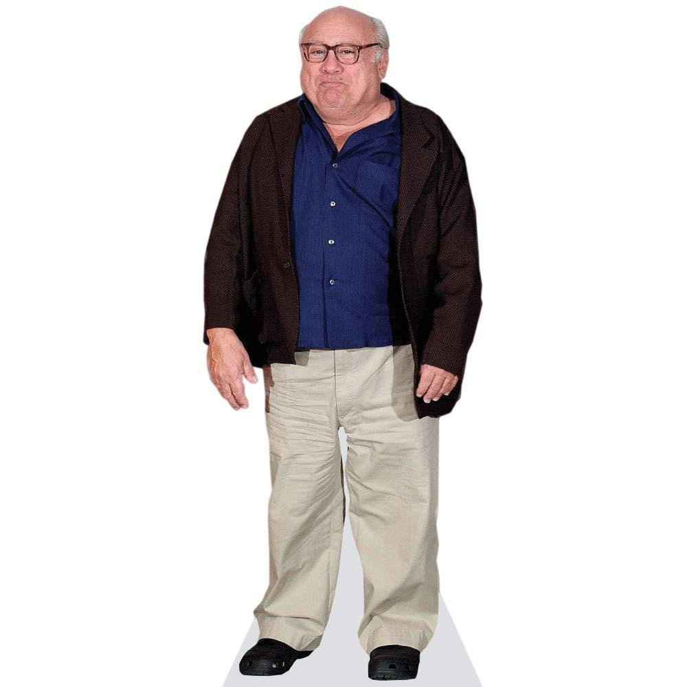

Biography
Danny DeVito is an American actor, comedian, director, and producer. He gained prominence for his role as the taxi dispatcher Louie De Palma in the television series Taxi (1978–1983), which won him a Golden Globe Award and an Emmy Award. He is also known for his film roles in movies such as 'One Flew Over the Cuckoo's Nest' (1975), 'Ruthless People' (1986), 'Throw Momma from the Train' (1987), 'Twins' (1988), 'Batman Returns' (1992), 'Get Shorty' (1995), and many others.
Filmography
| Year | Movie |
|---|---|
| 1975 | One Flew Over the Cuckoo's Nest |
| 1986 | Ruthless People |
| 1987 | Throw Momma from the Train |
| 1988 | Twins |
| 1992 | Batman Returns |
| 1995 | Get Shorty |